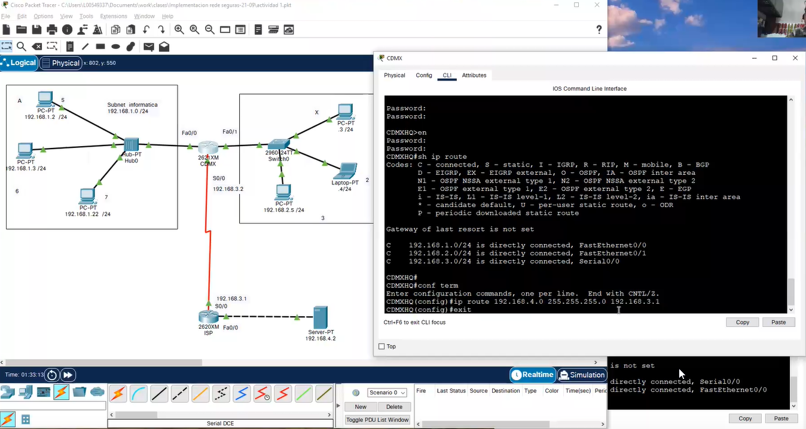

Poner una ruta dentro del servidor

Configurar el segunto roter (ISP) para que conosca las direcciones de arriba
Notese que en las conexiones los endpoints son redes de subnet (direcciones de bloque)